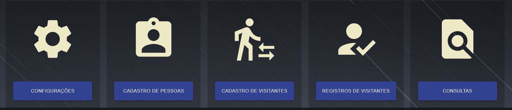

Guia Defense IA
Módulo Web Controle de Acesso
Características do módulo de Controle de Acesso
Principais vantagens na utilização do módulo:
- Criação de cadastros de forma mais intuitiva;
- Possibilidade de adicionar mais informações a um cadastro;
- Diferentes perfis de usuários de acesso com diferentes permissões dentro do sistema;
- ID Automático;
- Lição de visitantes em tempo real;
- Baixa automática para visitantes;
- Antipassback;
- QR Code para visitantes;
- Histórico de acesso com mais registros;
Menu principal

Configuração: Criação de usuários de acesso, criação de empresas/departamentos, controle
de portas;
Cadastro de Funcionários: Cadastro, edição e consulta de funcionários;
Cadastro de Visitantes: Cadastro, edição e consulta de visitantes;
Registros de Visitantes: Consulta de visitantes em tempo real e histórico de visitantes;
Consultas: Registros de acesso gerais, funcionários e visitantes.